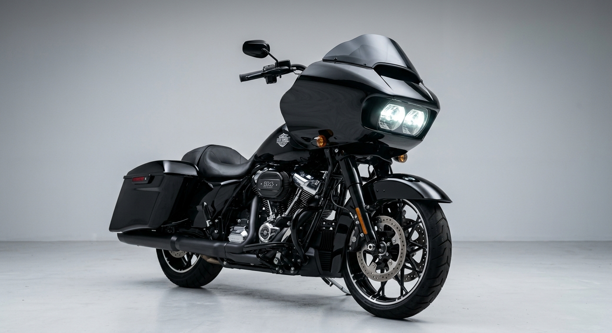

Ikon Sharknose Fairing & Estetika Bagger

Harley-Davidson Road Glide dikenal sebagai salah satu motor touring paling ikonik di dunia. Ciri khas utamanya terletak pada desain fairing depan berbentuk Sharknose (hidung hiu) yang dipasang langsung pada rangka utama (frame-mounted), bukan pada garpu depan.
Desain ini tidak hanya memberikan tampilan yang gagah dan agresif, tetapi juga meningkatkan stabilitas berkendara saat melintas di jalan tol atau terpapar angin kencang dari samping. Momen beban angin dialihkan langsung ke rangka, sehingga kemudi tetap ringan dan stabil.